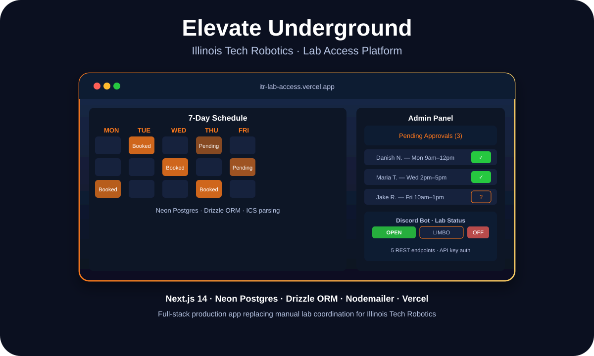

Full-Stack Product · TypeScript · Illinois Tech Robotics
Building a Real Lab Access System: Next.js, Discord Bots, and Replacing Spreadsheets

Danish Nadar
AI Engineer · Treasurer, Illinois Tech Robotics
Illinois Tech Robotics was coordinating lab access through ad-hoc messages and hope. I built a production platform to replace all of it.

Elevate Underground — calendar scheduling, admin dashboard, and Discord bot integration
The problem: coordination overhead that didn't need to exist
Illinois Tech Robotics has a dedicated lab space — Elevate Underground. Getting access to it involved messaging whoever happened to be available, waiting for a response, hoping the schedule was clear, and repeating. For a club that runs workshops, builds competition robots, and hosts new member sessions, that friction added up fast.
The solution didn't need to be complex — it needed to be reliable. Members needed to see availability, request specific time slots, and know when they were confirmed. Admins needed to approve or deny requests without managing a spreadsheet. And the Discord server — where the club actually communicates — needed to stay updated automatically.
I built the Elevate Underground Lab Access Platform to solve all three of those in one system.

Live at itr-lab-access.vercel.app
What Next.js 14 and Drizzle ORM actually feel like in production
The app is built on Next.js 14's app router with TypeScript throughout. The database is Neon Postgres, accessed through Drizzle ORM — which gave me type-safe schema definitions and query building without the overhead of a heavier ORM setup.
The 7-day calendar UI shows real-time availability pulled from the database. Request submissions trigger Nodemailer email notifications to admins. Approval or denial updates the database and sends a confirmation email to the member. The whole flow is database-backed from day one — not session-based or client-only.
One detail that required real thought: parsing ICS calendar files for availability data. Calendar formats are surprisingly messy. Getting clean, reliable time slot data out of them required writing normalization logic that handled edge cases like recurring events, timezone offsets, and malformed entries.
The Discord bot: five REST endpoints that the club actually uses
The Discord integration was the feature that made the platform feel real to club members. Instead of having to visit the web app, members can query lab status directly in Discord: is the lab open? What's the upcoming schedule? When is the next available slot?
The bot connects to five REST endpoints on the app backend, secured with API key authentication. Admins can update lab status (open, closed, limbo) via Discord commands. The status broadcasts to a designated channel automatically. It's a small integration that has a big effect on how visible and usable the platform is for a club that lives in Discord.
Stack
TypeScript · Next.js 14 · Neon Postgres · Drizzle ORM · Discord API · Nodemailer · Vercel
Impact
Replaced ad-hoc coordination with a production platform used by real Illinois Tech Robotics members.